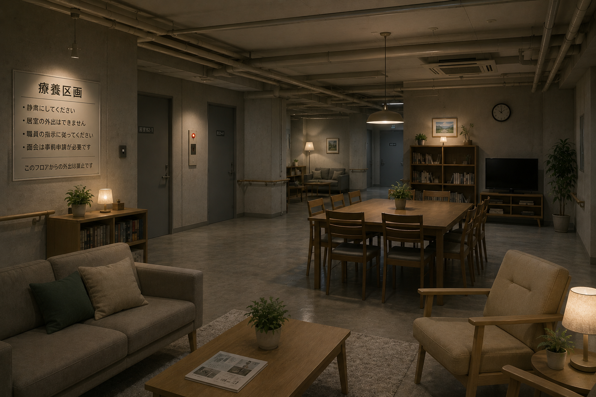
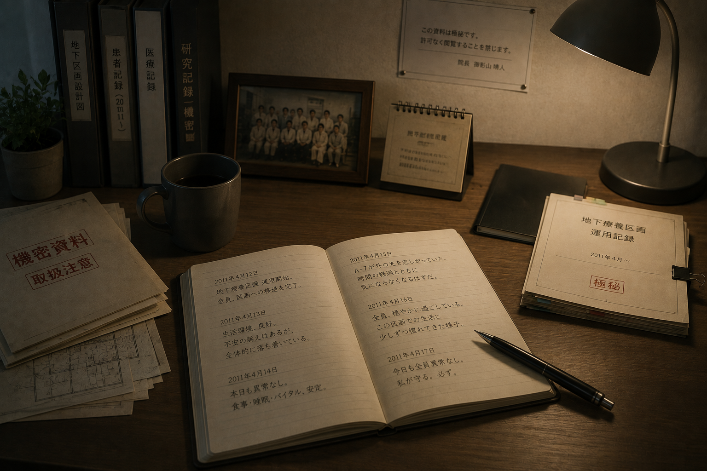

01 / DISCLOSURE
この診療所が隠していたもの
御影山診療所は、地域医療を担う一般診療所として運営される一方、地下には治療法の確立していない感染症患者を保護・隔離するための施設を備えています。
施設の存在は、地域住民だけでなく、診療所で働く一部の職員にも知らされていません。地下区画の運用に関わるのは、院長、感染管理担当者、行政から派遣された少数の担当者のみです。
患者たちは現在も生存していますが、公的な記録上では死亡者として処理されています。
02 / MK-041
感染症「MK-041」
感染症の正式名称は公表されておらず、施設内では管理番号「MK-041」で呼ばれています。患者は意識や記憶、人格を保ったまま生活できますが、進行速度には大きな個人差があります。
観察された主症状
- 長期間続く微熱
- 体温の段階的な低下
- 強い光への過敏反応
- 睡眠時間の増加
- 呼吸機能の緩やかな低下
- 免疫機能の異常
- 一部患者に見られる感覚変化
接触感染と飛沫感染の可能性が指摘されていますが、無症状期間が長く、感染経路は完全には解明されていません。一般社会での追跡は困難であり、治療環境がない場合は重症化率が高いと判断されています。
03 / FIRST CASE
最初の入院記録
最初の患者は、山間部で原因不明の発熱と呼吸器症状を訴え、御影山診療所へ搬送されました。当初は通常の感染症として治療されていましたが、既知の検査では原因を特定できませんでした。
その後、患者と接触した家族や地域住民にも同様の症状が確認されました。都市部の医療機関へ移送する計画も検討されましたが、移送中の感染拡大が懸念され、診療所内での隔離が決定されました。
この一時的な判断が長期化し、後の地下施設建設へつながりました。
04 / FACILITY EXPANSION
地下区画が作られた理由
御影山診療所の地下には、もともと災害時の備蓄庫と避難設備がありました。感染症発生後、この空間を改修して臨時の隔離病棟として使用し始めました。
患者の入院期間が長期化したため、地下区画は単なる病室から、生活を維持できる施設へと拡張されました。
- 個室
- 共有スペース
- 食堂
- 診察室
- 処置室
- 浴室
- 書庫
- 運動スペース
- 空調・浄化設備
- 専用搬入路
施設は患者を治療する場所であると同時に、外部へ出さないための場所でもあります。

05 / LIFE UNDERGROUND
地下で続く生活
患者たちは、入院から数年、あるいは十年以上にわたり地下で生活しています。食事、読書、テレビ視聴、軽い運動が認められ、患者同士で季節行事や誕生日を祝うこともあります。
- 外出禁止
- 家族との直接面会禁止
- 外部への電話禁止
- 手紙は内容確認後にのみ送付可能
- インターネット利用不可
- 写真撮影は管理者の許可制
- 私物の持ち込み制限
- 区画外では医療スタッフが同行
患者にとって地下施設は「病院」であり、「住居」であり、同時に「出ることのできない場所」でもあります。
06 / MISSING RECORDS
退院記録が存在しなかった理由
TOPページの退院者数が横線だったのは、患者が通常の退院にも、転院にも、院内死亡にも分類できなかったためです。
- 入院
- 隔離対象へ指定
- 公開記録から除外
- 死亡処理
- 地下区画で療養継続
医療上は継続入院である一方、公的記録上では死亡処理され、公開用統計では分類不能となりました。その結果、退院欄だけが空欄または横線で残されました。
07 / CIVIL RECORDS
存在を消すための手続き
感染者の存在を秘匿するため、行政は患者を死亡したものとして扱う方針を決定しました。死亡診断書、戸籍、保険、住民記録は、行政側の管理下で処理されました。
実際の遺体は存在しません。家族には感染防止上の理由から遺体を返却できないと説明され、遺骨の代わりとして封印された容器が渡されたケースも記録されています。
08 / TWO EXPLANATIONS
家族に伝えられたこと
家族への説明
- 重篤な感染症により死亡した
- 二次感染防止のため面会できない
- 遺体は専門機関が処理した
- 医療記録の一部は開示できない
- 詳細な死因は非公開
患者本人への説明
「治療法が見つかるまで、一時的に隔離する」
ただし、その期限は設定されていませんでした。

09 / DIRECTOR'S DIARY
院長・久世直人の記録
院長室から復元された日誌には、地下区画の運用と、久世自身の迷いが日付付きで残されていました。
地下区画への移送を開始。全員、区画への移送を完了。
A-7が外の花を恋しがっていた。廊下の鉢植えとともに、写真を撮ることを許可した。
行政から死亡処理完了の連絡。今日から彼らは、地上の記録には存在しない。
新しい治療法の候補は、再び承認されなかった。
最初の入院から七年。彼らはまだ、いつ帰れるのかと尋ねてくる。
私にはもう、これは隔離なのか保護なのか分からない。
彼らは患者です。処分の対象でも、存在しなかったことにしてよい人間でもありません。
いつか治療法が見つかり、彼らの名前が再び記録へ戻る日まで。
10 / GROUP PHOTOGRAPH
地下療養区画 春の記念撮影
2011年4月15日
写真に写る患者の氏名は、すべて削除されています。中央に写る人物は院長の久世直人です。患者たちは撮影時点で、家族や社会に対してすでに死亡したものとして扱われていました。
同日に撮影された感染管理記録が復元されました。
11 / CURRENT STATUS
現在も地下で暮らす患者たち
複数名の患者が現在も生活しています。一部は症状が安定し、地下区画内で日常生活を送っています。症状が進行した患者は隔離区域で継続的な治療を受けています。
研究は続いていますが、完全な治癒例は確認されていません。長期隔離による心理的影響も深刻です。
- 時間感覚の低下
- 抑うつ
- 外部への強い憧れ
- 家族への罪悪感
- 死亡記録に対する混乱
- 地上へ戻ることへの恐怖
12 / CONFLICT
院長が拒んだ計画
感染症発生当初、行政内部では感染者を恒久的に処分する案も検討されていました。院長はその方針に反対し、地下施設での長期保護を条件に計画への協力を受け入れました。
ただし、院長も患者の存在を家族や社会から隠し続けています。
- 守ったもの
- 患者の生命
- 奪ったもの
- 患者の自由
- 拒んだこと
- 感染者の処分
- 受け入れたこと
- 公的な死亡扱い
- 続けたこと
- 治療と生活支援
- 行わなかったこと
- 外部への告発
13 / DECISION
保護か、隠蔽か
御影山診療所は、感染者の命を守る場所です。同時に、患者の存在を社会から消し、自由を奪い続ける施設でもあります。
患者を地上へ戻せば、感染拡大の可能性があります。しかし地下へ閉じ込め続ければ、患者は生きているにもかかわらず、社会的には死亡したままです。
院長の選択が正しかったのかどうか、記録には結論がありません。